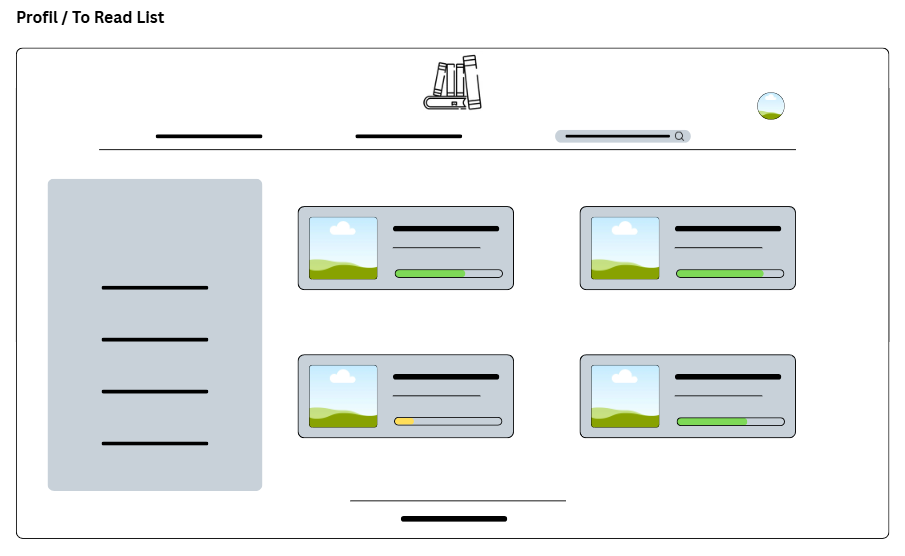

Overview
Purpose
PageTurner helps readers discover books based on genre and track their reading progress. Users can browse book recommendations, add books to a reading list, and mark books as started or completed.
Audience
The intended audience is students and casual readers who want an easy way to find their next book and organize their reading goals.
Dynamic elements
Filter books by genre, Search books by title or author, Display book cards dynamically, Add books to a reading list, Mark books as “Not Started,” “Reading,” or “Completed”, Update a reading-progress counter, Show a message when no books match the search, Include a dark-mode button
Branding
Website Logo
Style Guide
Color Palette
Palette URL: https://coolors.co/1f3a5f-fff8e7-e8d8c3-62704c-aabd8c| Primary | Secondary | Accent 1 | Accent 2 |
|---|---|---|---|
| [#62704c] | [#aabd8c] | [#fff8e7] | [#e8d8c3] |
Pseudocode for your project
Begin
Select the search form and search input.
Listen for the form submission.
Prevent the page from refreshing.
Read the user's search term.
Display a loading message.
Send a request to the Google Books API.
Convert the response to JSON.
If results exist:
Loop through the results.
Create a book card for each book.
Display the title, author, cover, and description.
If no results exist:
Display a message asking the user to try another search.
When the user clicks Add to Reading List:
Save the book in localStorage.
Display the saved book in the reading list.
When the user changes a book's status:
Update its status.
Update the progress counter.
End
Wireframes


